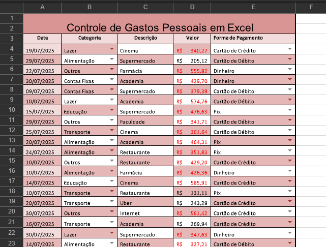
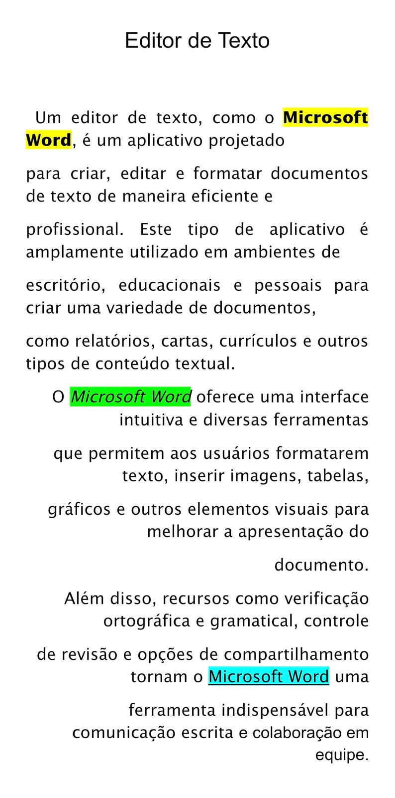

Fundamentos de Tecnologia da Informação
1. O que é Hardware?
Hardware é toda a parte física do computador: peças, componentes, placas e dispositivos.
Exemplos importantes:
• Placa-mãe: onde todos os componentes são conectados.
• Processador (CPU): cérebro do computador, executa instruções.
• Memória RAM: memória principal, rápida e temporária.
2. O que é um Sistema Operacional?
É o software principal que gerencia todo o hardware e permite o uso do computador.
Ele controla:
• Memória
• Processador
• Discos
• Programas e aplicativos
Exemplos de sistemas operacionais:
• Windows
• Linux (Ubuntu, Mint)
• macOS
• Android
3. O que é Sistema de Arquivos?
É a forma como o sistema operacional organiza e salva arquivos no disco.
Modo texto (CMD):
• Usado através de comandos.
• Exemplos:
- dir → lista arquivos
- cd → troca de pasta
- del → apaga arquivos
Modo gráfico (Explorer):
• Uso de janelas, ícones e pastas.
• Permite arrastar, copiar e excluir arquivos visualmente.
4. O que é Software de Escritório?
São programas usados para editar textos, criar planilhas, apresentações e documentos.
Exemplos:
• Microsoft Word – criação e edição de textos
• Excel – cálculos e planilhas
• PowerPoint – apresentações
5. Fotos Excel
Fotos dos exercícios:
6. Fotos Word
Fotos dos exercícios:
7. Fotos PowerPoint
Fotos dos exercícios:

.png)
.png)
.png)
.png)
.png)